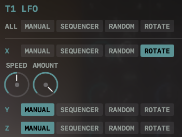
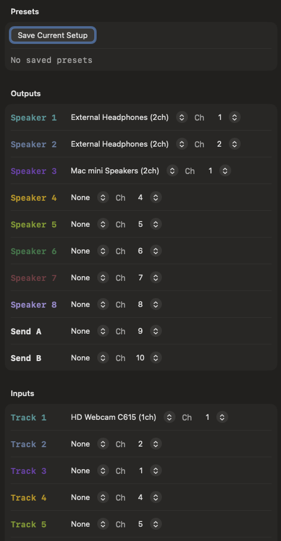

功能介紹
DECAPyramid 是一款 8 軌 3D VBAP 空間混音器，從 MADZINE VCV Rack 模組獨立發展為商業版本。程式使用 8 喇叭立方體配置的 Vector Base Amplitude Panning（VBAP）演算法，在三維空間中對每軌的聲源進行即時定位。使用者透過等距投影的 3D 視圖拖曳聲源位置，介面同時提供全域總覽與單軌操作兩種模式。
每軌內建 4 種模式的 3D LFO：手動模式允許直接操控位置、序列器模式依預設路徑點循環移動、隨機模式產生不可預測的空間軌跡、旋轉模式沿指定軸進行週期性旋轉。LFO 支援速度、振幅與平滑度參數調整，並可錄製自定義移動路徑。每軌另配備 7 種 Biquad 濾波器（低通、高通、帶通、陷波、峰值、低架、高架）、Peak/RMS 雙模式 VU 表，以及獨立的 Send A/B 控制。
音訊路由透過 macOS CoreAudio IOProc 實現多裝置同時輸出，最多支援 22 聲道的輸出配置，每個輸出聲道可獨立指定對應的物理裝置與聲道位置。C++17 DSP 核心處理所有即時音訊運算，Swift/SwiftUI 前端負責介面呈現，支援 macOS 與 iOS 雙平台。預設檔系統使用 JSON 格式儲存完整的混音器狀態。



特色一覽
- 8-speaker cube VBAP panning
- 4-mode 3D LFO
- 7 Biquad filter types
- Peak / RMS VU meters
- Multi-device audio routing (22 channels)
- Preset file management
技術資訊
- 開發語言
- C++17 (DSP) + Swift / SwiftUI
- 平台
- macOS, iOS
- 版本
- v1.2